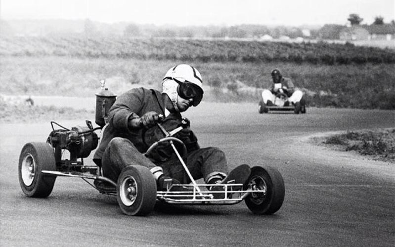

Karting is a sport and entertainment, racing on karts - the simplest racing cars without a body and, most often,
with open wheels.The first full-fledged kart was built in California in 1956 by an American named Art Ingles.
He worked as a mechanic for Kurtis Kraft, a racing car builder.
His kart was assembled from unnecessary scrap metal and was closer in design to children's homemade projects than to modern karts.
However, it had one main difference from children's karts - a two-stroke engine from a lawn mower.
In May 1960, the International Motor Sports Federation (FIA) officially recognized karting as a form of motorsport.
In 1962, the International Commission for Karting (CIK FIA) was created.
In 1964, the first world karting championship with 100 cm³ engines was held in Rome.
Karting has become the second type of motorsport in the world in which a world championship is held, after Formula 1).
